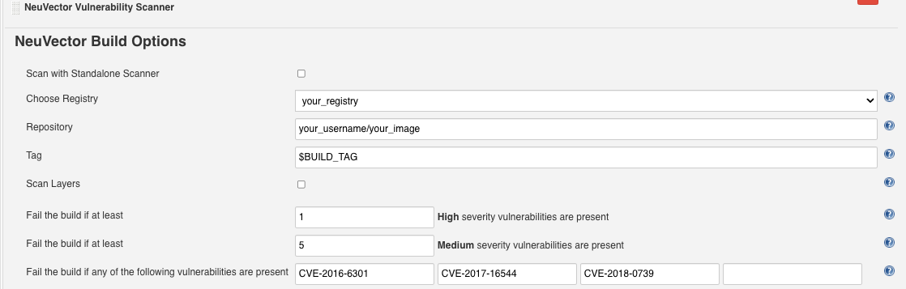

Detalles de Jenkins
Configuración Detallada para el Complemento de Jenkins
Los contenedores proporcionan una forma fácil y eficiente de desplegar aplicaciones. Pero las imágenes de contenedor pueden contener código abierto sobre el cual no tienes un control total. Se han reportado muchas vulnerabilidades en proyectos de código abierto, y puedes decidir usar estas bibliotecas con vulnerabilidades o no después de escanear las imágenes y revisar la información sobre vulnerabilidades.
El complemento de Jenkins SUSE® Security Vulnerability Scanner puede escanear las imágenes después de que tu imagen se haya construido en Jenkins. El código fuente del complemento y la documentación más reciente se pueden encontrar aquí en la página de GitHub SUSE® Security.
El complemento soporta dos modos de escaneo. El primero es el modo "Controlador y Escáner". El segundo es el modo de escáner independiente. Puedes seleccionar el modo de escaneo en la página de configuración del proyecto. Por defecto, utiliza el modo "Controlador y Escáner".
Para el modo "Controlador y Escáner", necesitas desplegar el SUSE® Security controlador y escáner en la red. Para escanear la imagen local (la imagen en la máquina de Jenkins), el "Controlador y Escáner" debe estar instalado en el mismo nodo donde existe la imagen.
Para el modo de escáner independiente, el tiempo de ejecución de Docker debe estar instalado en el mismo host con Jenkins. Además, añade el usuario jenkins al grupo docker.
sudo usermod -aG docker jenkinsInstalación del Complemento de Jenkins
Primero, ve a Jenkins en tu navegador para buscar el complemento SUSE® Security. Esto se puede encontrar en:
→ Gestionar Jenkins → Gestionar Plugins → Disponible → filtro → búsqueda SUSE® Security Vulnerability Scanner →
Selecciona y haz clic en install without restart.
Despliega el contenedor del SUSE® Security Controlador y Escáner si aún no lo has hecho en un host accesible por el servidor Jenkins. Esto puede estar en el mismo servidor que Jenkins si así lo deseas. Toma nota de la dirección IP del host donde se está ejecutando el Controlador. Nota: El puerto REST API por defecto es 10443. Este puerto debe estar expuesto a través del Allinone o Controlador mediante un servicio en Kubernetes o un mapeo de puertos (por ejemplo, - 10443:10443) en el archivo de ejecución o composición de Docker.
Además, asegúrate de que hay un contenedor de escáner SUSE® Security desplegado de forma independiente y configurado para conectarse al Controlador (si se está utilizando el Controlador).
Hay dos escenarios para el escaneo de imágenes, escaneo local y escaneo de registro.
-
Escaneo de Imagen Local. Si utilizas el complemento para escanear imágenes locales (antes de subir a cualquier registro), puedes escanear en el mismo host que el controlador/escáner o configurar el escáner para acceder al motor de docker en un host remoto.
-
Escaneo de Imagen de Registro. Si utilizas el complemento para escanear imágenes de registro (después de subir a cualquier registro, pero como parte del proceso de construcción de Jenkins), el SUSE® Security Escáner puede ser instalado en cualquier nodo de la red con conectividad entre el registro, SUSE® Security Escáner y Jenkins.
Configuración global en Jenkins
Después de instalar el complemento, encuentra la sección ‘SUSE® Security Vulnerability Scanner’ en la página de configuración global (Jenkins ‘Configure System’). Introduce los valores para la IP del SUSE® Security Controlador, puerto, nombre de usuario y contraseña. Puedes hacer clic en el botón ‘Test Connection’ para validar los valores. Mostrará ‘Connection Success’ o un mensaje de error.
El valor de minutos de tiempo de espera terminará el paso de construcción dentro del tiempo ingresado. El valor predeterminado de 0 significa que no ocurrirá ningún tiempo de espera.
Haz clic en el ‘Add Registry’ para introducir valores para el registro que utilizarás en tu proyecto. Si solo vas a escanear imágenes locales, no necesitas añadir un registro aquí.
Escenario 1: ejemplo de configuración global para el escaneo de imágenes locales

Escenario 2: ejemplo de configuración global para el escaneo de imágenes de registro
Para la configuración global del registro, sigue las instrucciones anteriores para local, luego añade los detalles del registro como se indica a continuación.

Escáner Autónomo
Ejecutar el escaneo de Jenkins en modo autónomo es una forma ligera de escanear vulnerabilidades de imágenes en la canalización. El escáner se invoca dinámicamente y no se requiere instalación de la configuración del controlador. Esto es especialmente útil al escanear una imagen antes de que se envíe a un registro. Tampoco tiene límite en cuántas tareas de escaneo pueden ejecutarse al mismo tiempo.
Para ejecutar el escaneo de vulnerabilidades en modo autónomo, el complemento de Jenkins necesita descargar la imagen del escáner en el host donde se está ejecutando el agente, por lo que necesitas introducir SUSE® Security la URL del registro del escáner, el repositorio de imágenes y las credenciales si es necesario, en la página de configuración del complemento SUSE® Security.
El resultado del escaneo también puede ser enviado al controlador y utilizado en la función de control de admisión. En este caso, sí necesitas una configuración de controlador y especificar cómo conectarte al controlador en la página de configuración del complemento SUSE® Security.
Configuración local para escanear un host Docker remoto
Requisitos previos para el escaneo local en un host Docker remoto
Para habilitar SUSE® Security para escanear una imagen que no está en el mismo host que el controlador/todo-en-uno:
-
Asegúrate de que el socket de la API de tiempo de ejecución de Docker esté expuesto a través de TCP.
-
Añade la siguiente variable de entorno al controlador/allinone: SCANNER_DOCKER_URL=tcp://192.168.1.10:2376
Configuración de proyecto
En tu proyecto, elige el complemento 'SUSE® Security Escáner de Vulnerabilidades' del menú desplegable en 'Añadir paso de construcción.' Marca la casilla "Escanear con escáner independiente" si deseas realizar el escaneo en modo escáner independiente. Por defecto, utiliza el modo "Controlador y Escáner" para realizar el escaneo.
Elige Local o un nombre de registro que sea el apodo que introdujiste en la configuración global. Introduce el nombre del repositorio y la etiqueta de imagen a escanear. Puedes elegir las variables de entorno predeterminadas de Jenkins para el repositorio o la etiqueta, por ejemplo, $JOB_NAME, $BUILD_TAG, $BUILD_NUMBER. Introduce los valores para el número de vulnerabilidades altas o medias, y para cualquier nombre de las vulnerabilidades presentes que hagan fallar la compilación.
Después de que la construcción haya finalizado, se generará un informe de SUSE® Security. Mostrará los detalles del escaneo y errores, si los hay.
Escenario 1: ejemplo de configuración local

Escenario 2: ejemplo de configuración de registro

Jenkins Pipeline
Para el proyecto de pipeline de Jenkins, puedes escribir tu propio script de pipeline directamente, o hacer clic en ‘pipeline syntax’ para generar el script si eres nuevo en la tarea de estilo pipeline.

Selecciona el SUSE® Security Escáner de Vulnerabilidades del menú desplegable, configúralo y genera el script.

Copia el script en el script de tu tarea de Jenkins.
Situación 1: Ejemplo de script de pipeline local simple (para insertar en tu script de pipeline):
...
stage('Scan local image') \{
neuvector registrySelection: 'Local', repository: 'your_username/your_image'
\}
...Situación 2: Ejemplo de script de pipeline de registro simple (para insertar en tu script de pipeline):
...
stage('Scan local image') \{
neuvector registrySelection: 'your_registry', repository: 'your_username/your_image'
\}
...Etapas adicionales
Añade tus propias etapas de escaneo de imágenes previas y posteriores, por ejemplo en el ejemplo de vista de etapas de Pipeline a continuación.

¡Ahora estás listo para iniciar tus construcciones en Jenkins y activar el SUSE® Security Escáner de Vulnerabilidades para informar sobre cualquier vulnerabilidad!
Configurando el Pipeline para construir escaneos paralelos a gran escala
Disponible con NeuVector v5.4.3 y versiones posteriores, el complemento de Jenkins NeuVector Vulnerability Scanner v2.5 y versiones posteriores admite el escaneo paralelo de hasta 2000 escaneos concurrentes al usar el modo de clave API. Para versiones anteriores de NeuVector, los escaneos concurrentes máximos están limitados a 32 con el uso del modo Token. Haz clic para expandir y ver los ejemplos a continuación para configuraciones de pipeline de muestra.
Configuración de ejemplo usando el modo Token (complemento v2.4 y anteriores, o v2.5 y posteriores)
pipeline {
agent any
environment {
REPO_NAME = 'your repo'
REGISTRY_SELECTION = 'your registry'
CONTROLLER = 'your controller'
MAX_CONCURRENT_SCANS = 32
}
stages {
stage('Parallel Vulnerability Scanning') {
steps {
script {
// There is a limit of 250 tags per list (by Jenkins)
TAGS_LIST_PART1 = ["your tags"...]
TAGS_LIST_PART2 = ["your tags"...]
TAGS_LIST_PART3 = ["your tags"...]
TAGS_LIST_PART4 = ["your tags"...]
TAGS_LIST_PART5 = ["your tags"...]...
def allTags = TAGS_LIST_PART1 + TAGS_LIST_PART2 + TAGS_LIST_PART3 + TAGS_LIST_PART4 + TAGS_LIST_PART5
def batches = allTags.collate(MAX_CONCURRENT_SCANS.toInteger()) // Ensure MAX_CONCURRENT_SCANS is an integer
def batchCounter = 1 for (batch in batches) {
stage("Batch ${batchCounter}") {
def scans = [:]
batch.each { tag ->
def currentTag = tag
scans["Scan ${currentTag}"] = {
stage("Scan ${currentTag}") {
neuvector(
controllerEndpointUrlSelection: CONTROLLER,
registrySelection: REGISTRY_SELECTION,
repository: REPO_NAME,
scanTimeout: 20,
tag: "${currentTag}"
)
echo "Scan for tag ${currentTag} complete"
}
}
}
parallel scans
}
batchCounter++
}
}
}
}
}
}Usando el modo de clave API (complemento v2.5 y posteriores)
pipeline {
agent any
environment {
REPO_NAME = 'your repo'
REGISTRY_SELECTION = 'your registry'
CONTROLLER = 'your controller'
}
stages {
stage('Parallel Vulnerability Scanning') {
steps {
script {
// There is a limit of 250 tags per list (by Jenkins)
TAGS_LIST_PART1 = ["your tags"...]
TAGS_LIST_PART2 = ["your tags"...]
TAGS_LIST_PART3 = ["your tags"...]
TAGS_LIST_PART4 = ["your tags"...]
TAGS_LIST_PART5 = ["your tags"...]...
def allTags = TAGS_LIST_PART1 + TAGS_LIST_PART2 + TAGS_LIST_PART3 + TAGS_LIST_PART4 + TAGS_LIST_PART5
def scans = [:]
allTags.each { tag ->
def currentTag = tag
scans["Scan ${currentTag}"] = {
stage("Scan ${currentTag}") {
neuvector(
controllerEndpointUrlSelection: CONTROLLER,
registrySelection: REGISTRY_SELECTION,
repository: REPO_NAME,
scanTimeout: 20,
tag: "${currentTag}"
)
echo "Scan for tag ${currentTag} complete"
}
}
}
parallel scans
}
}
}
}
}Ejemplo de Token de Ruta y Registro de OpenShift
Para configurar el complemento usando una ruta de OpenShift para el ingreso al controlador, añade la ruta en el campo de IP del controlador.

Para usar autenticación basada en token para el registro de OpenShift, usa NONAME como usuario e introduce el token en la contraseña.
Caso de uso especial para Jenkins en el mismo clúster de Kubernetes
Para realizar escaneos en la fase de construcción donde el software de Jenkins se ejecuta en el mismo clúster de Kubernetes que el escáner, asegúrate de que el escáner y Jenkins estén configurados para ejecutarse en el mismo nodo. El nodo debe ser etiquetado para que los contenedores de Jenkins y del escáner se ejecuten en el mismo nodo, ya que el escáner necesita acceso al docker.sock del nodo local para acceder a la imagen.